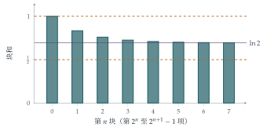

STEP III 2014，第 8 题
继续之前，请先阅读题目（原题为英文）。题目载于 STEP Support Programme 的题目资料库： step.maths.org/questions/14-s3-q8
引子
调和级数（harmonic series）\(1 + \frac12 + \frac13 + \frac14 + \cdots\) 是最著名的例子：它的各项缩小至零，但总和却无止境地增长。它增长得慢得离谱：要超过 \(10\)，需要多于 \(12{,}000\) 项；要超过 \(100\)，则需要大约 \(1.5 \times 10^{43}\) 项。但它终究会超过任何一个数。
现在把分母含有数字 \(2\) 的项全部丢掉：\(\frac12\)、\(\frac1{12}\)、\(\frac1{20}\) 至 \(\frac1{29}\)、\(\frac1{32}\) 等等统统删去。你也许会以为，对一个本来就是无穷大的和来说，删去十分之一左右的项不会有多大分别。事实却是，余下各项加起来小于 \(80\)。这个出人意表的结果由 A. J. Kempner 于 1914 年证明，而本题只用一个简单而漂亮的想法，就把你一步步带到这个结论：把和式切成一块一块。
动笔之前
第一个不等式谈的是由 \(r = k^n\) 至 \(r = k^{n+1} - 1\) 的那一块。取 \(k = 2\) 和 \(n = 3\)，这一块包含哪些项？共有多少项？
它们是 \(f(8), f(9), \ldots, f(15)\)，共八项。一般而言，这一块由 \(k^n\) 排到 \(k^{n+1} - 1\)，所以共有 \(k^{n+1} - k^n = k^n(k-1)\) 项。不等式所说的是：这一块的和介乎（项数）\(\times\)（各项可能取的最小值）与（项数）\(\times\)（最大的一项）之间。
逐步解题
阶段 1 估计一块的上下界
由于 \(f\) 是递减（decreasing）的，这一块内的每一项都满足 \[f(k^{n+1}) < f(k^{n+1} - 1) \leq f(r) \leq f(k^n) \qquad (k^n \leq r \leq k^{n+1} - 1).\] 把这 \(k^n(k-1)\) 项加起来，便得到该不等式。■
阶段 2 调和级数
取 \(k = 2\) 和 \(f(r) = 1/r\)，由 \(2^n\) 至 \(2^{n+1} - 1\) 的那一块，两个界分别是甚么？
下界（lower bound）是 \(2^n \cdot \frac{1}{2^{n+1}} = \frac12\)，上界（upper bound）是 \(2^n \cdot \frac{1}{2^n} = 1\)。所以每一块，不论排得多后，其贡献都介乎 \(\frac12\) 与 \(1\) 之间（图 2.3.1）。\(n = 0, 1, \ldots, N\) 的各块恰好拼合成由 \(r = 1\) 至 \(r = 2^{N+1} - 1\) 的和，所以把 \(N + 1\) 块加起来，便得 \[\frac{N+1}{2} \leq \sum_{r=1}^{2^{N+1}-1} \frac1r \leq N + 1.\] 当 \(N \to \infty\) 时，左边无止境地增长，所以部分和（partial sum）无界，级数发散（diverge）。■

阶段 3 立方倒数之和
现在取 \(f(r) = 1/r^3\)，仍然用 \(k = 2\)。第 \(n\) 块的上界是 \[2^n \cdot \frac{1}{(2^n)^3} = \frac{1}{4^n}.\] \(n = 0, 1, 2, \ldots\) 的各块把每个正整数恰好覆盖一次，所以 \[\sum_{r=1}^{\infty} \frac{1}{r^3} \leq \sum_{n=0}^{\infty} \frac{1}{4^n} = \frac{1}{1 - \frac14} = \frac43 = 1\tfrac13. \qed\] （严格来说，这只证明了每个部分和都不超过 \(\frac43\)；一个递增而有上界的数列必定收敛（converge），所以这个无穷和存在，而且不超过 \(\frac43\)。它的真正数值是 \(1.2020\ldots\)）
阶段 4 数一数不含 2 的数
如果容许在前面补零（例如把 \(7\) 写成 \(007\)），由 \(0\) 至 \(999\) 的整数之中，有多少个可以只用数字 \(0, 1, 3, 4, 5, 6, 7, 8, 9\) 写出来？
三个数位每个都有 \(9\) 种选择，所以这样的数字串共有 \(9^3\) 个。它们与由 \(0\) 至 \(999\) 之中不含 \(2\) 的数一一对应，再剔除 \(0\)（它不是正数），\(S(1000)\) 中便剩下 \(9^3 - 1 = 728\) 个数。■
阶段 5 Kempner 级数
分块的想法现在同样适用，只是改为按位数来分块，这等同于取 \(k = 10\)。
有多少个 \(d\) 位数不含 \(2\)？而一个 \(d\) 位数最小可以是多少？
首位数字可以是 \(1, 3, 4, \ldots, 9\) 中任何一个（八种选择：不能是 \(0\)，也不能是 \(2\)），其余 \(d - 1\) 个数位各有九种选择。所以这样的数共有 \(8 \times 9^{d-1}\) 个，而每一个都至少是 \(10^{d-1}\)。因此，\(S(n)\) 中的 \(d\) 位数对 \(\sigma(n)\) 的贡献至多是 \[8 \times 9^{d-1} \times \frac{1}{10^{d-1}} = 8 \left( \frac{9}{10} \right)^{d-1}\] 。对所有位数 \(d = 1, 2, 3, \ldots\) 求和， \[\sigma(n) \leq \sum_{d=1}^{\infty} 8 \left( \frac{9}{10} \right)^{d-1} = \frac{8}{1 - \frac{9}{10}} = 80.\] 至于严格不等式，只须留意大部分的界都远远未达到相等（例如 \(\frac13 < 1\)，而我们却用 \(1\) 作为每个一位数项的上界），所以对所有 \(n\) 都有 \(\sigma(n) < 80\)。■
回顾
把各项分组。两个和逐项处理都不容易。把它们分成大小合适的块之后，每个和都可以与一个等比级数（geometric series）比较。
怎样分块视乎问题而定。\(2\) 的幂适合 \(1/r\) 和 \(1/r^3\)；\(10\) 的幂则适合一道关于十进制数字的题目。
有界而递增。两个收敛证明都建基于与 第 2.2 节 相同的原理：正项的部分和是递增的，所以只需要找到一个界便足够。
背后的数学
题目中的第一个不等式正是柯西凝聚判别法（Cauchy’s condensation test）的核心：若 \(f\) 为正且递减，则 \[\sum_{r=1}^{\infty} f(r) \text{ 收敛} \iff \sum_{n=0}^{\infty} 2^n f(2^n) \text{ 收敛。}\] 它把困难的级数变成容易的级数。应用于 \(f(r) = 1/r^p\)，便得到 \(\sum 2^n \cdot 2^{-np} = \sum (2^{1-p})^n\)，这是一个等比级数，恰好在 \(p > 1\) 时收敛。应用于 \(1/(r \ln r)\)，可知连这个级数也发散；应用于 \(1/(r (\ln r)^2)\)，则可知这个级数收敛。这个论证可追溯至奥雷姆（Nicole Oresme），他在大约 1350 年正是用图 2.3.1 中的分块方法，证明了调和级数发散。
调和级数发散得有多慢
图 2.3.1 显示每一块的贡献大约是 \(\ln 2\)，所以首 \(N\) 项之和应该大约是 \(\log_2 N \times \ln 2 = \ln N\)。事实上 \[1 + \frac12 + \cdots + \frac1N = \ln N + \gamma + \text{（某个趋向 $0$ 的量）},\] 其中 \(\gamma = 0.5772\ldots\) 是欧拉－马斯刻若尼常数（Euler–Mascheroni constant）。至今没有人知道 \(\gamma\) 是否有理数（rational）。你会在大学一年级的分析课中用积分证明这条公式，而调和数（harmonic numbers）会在 第 9.11 节 和 第 11.12 节 再次出现。
大多数的数都含有 2
Kempner 级数为甚么收敛？因为在大数之中，“不含 2 的数”非常罕有：在小于 \(10^d\) 的数之中，不含 \(2\) 的所占比例至多是 \((0.9)^d\)，而这个比例趋向 \(0\)。在 \(100\) 位数之中，只有不足 \(0.003\%\) 能避开数字 \(2\)。所以我们删去的并不是十分之一的项，而是几乎所有的项。我们求得的界 \(80\) 相当宽松：1979 年，Robert Baillie 用一种加速方法把这个和计算到小数点后许多位，其值约为 \(19.257\)。
幂的倒数之和
第 (ii) 部分的和是 \(\zeta(3)\)，即我们在 第 1.2 节 遇过的黎曼（Riemann）zeta 函数的一个值。在 第 2.4 节 我们会求出 \(\zeta(2) = \pi^2/6\) 的准确值，而欧拉（Euler）亦找到了 \(\zeta(4), \zeta(6), \ldots\) 的公式。但至今没有人找到 \(\zeta(3)\) 的公式。1978 年，Roger Apéry 证明了 \(\zeta(3)\) 是无理数（irrational），震惊了整个数学界；他所用的积分与 第 2.9 节 中的颇为相似。至于 \(\zeta(5)\) 是否无理数，至今仍然未知。
思维技巧
要判断一个正项级数是否收敛，可以把各项分成若干块，使每块内的项大致不变，然后把每一块与一个简单的级数比较。
比较判别法（comparison test）是大学一年级分析课的家常便饭。技巧在于选择与甚么比较：在这里，就是选大小为 \(2^n\) 或 \(10^d\) 的块，块内各项的变化不超过一个固定的倍数。
延伸练习
感受一下有多慢。利用 \(\sum_{r \leq N} 1/r \approx \ln N + 0.5772\)，估计调和级数需要多少项才超过 \(10\)，以及需要多少项才超过 \(100\)。
判别法的实际运用。用第 (i) 部分的方法，取 \(f(r) = 1/r^2\)，证明 \(\sum 1/r^2 \leq 2\)。然后把第一项分开处理，从而改进这个界。
在收敛与发散之间。利用 \(k = 2\) 的分块不等式，证明 \(\sum_{r \geq 2} \dfrac{1}{r \ln r}\) 发散，而 \(\sum_{r \geq 2} \dfrac{1}{r (\ln r)^2}\) 收敛。
排除更多数字。 较难 证明：十进制表示中既不含 \(2\) 亦不含 \(7\) 的所有正整数，其倒数（reciprocal）之和小于 \(35\)。（你看得出 \(35\) 是怎样来的吗？）
延伸阅读
Julian Havil, Gamma: Exploring Euler’s Constant（Princeton University Press）。讲述调和级数、\(\gamma\) 以及更多相关课题，为程度较高的中学生而写。
Mary Hart, Guide to Analysis（Palgrave）。一本简明的大学一年级教科书，其中论级数与比较判别法的一章写得十分清晰。
Robert Baillie, “Sums of reciprocals of integers missing a given digit”, American Mathematical Monthly 86 (1979)。一篇短论文（论缺少某个指定数字的整数的倒数之和），读完本节后你便有能力读懂。